Hey there Girl!
Happy Birthday I want to take this opportunity to tell you what a little blessing it is to know you. Before we had even met, you would greet me at Frostbite "Hey lovely, what can I get for ya?". It seems like a small thing, but it's more meaningful than you think. You're such a pleasure to be around, I wish there were more people in this world like you. So here's to many many more years of your contagious smile. I hope you have a great year.
SamDo xx
Justin Asfour
Happy birthday Jess,
This past year we saw each other so much around the EUS mall and it seemed like every day you were up to something different -- fundraising, collecting, ring-fitting, ppo-repping, staying late at Frostbite (ahh thank you), and giving amazing hugs that really lifted up my down days. It amazes me you could do so so much and still be so caring for everyone around you. So thank you so much for everything and I look forward to one more year'
Robert Forstell
Despite all my travels, I'll always remember
There's something special about Movember.
It's not about fame or the sound of applause,
But a rallying cry for a good cause.
And who do we thank, who brought this to McGill?
I know her quite well, (and hope to do still)
And now that school's done, and I'm an adult.
I have my memories to consult.
There's mos, bros, ppo's & cocos
Pub crawls, lab coats, and weeks both E's and O's
Somewhere in the back, there is quite a sight,
That woman was there from Dawn till Frostbite.
Thanks Jess, for everything.
Dan Dicaire
“The only people for me are the mad ones, the ones who are mad to live, mad to talk, mad to be saved, desirous of everything at the same time, the ones who never yawn or say a commonplace thing, but burn, burn, burn like fabulous yellow roman candles exploding like spiders across the stars.”
-Jack Kerouac
Louis Pombo
Jess,
You make the highs worth having, and the lows worth surviving. I miss you so much and I can't wait to come visit again. Thanks for making the last 5 years tolerable, I hope you enjoyed the good times as much as I have.
Don't ever stop being you. Let's go sailing the next time I'm in town.
Happy Birthday!
Love,
Ben, AKA Naked, AKA It's Always Naked in Philadelphia
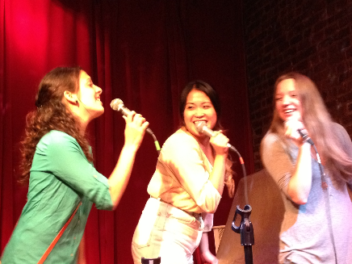
Cam Dagg
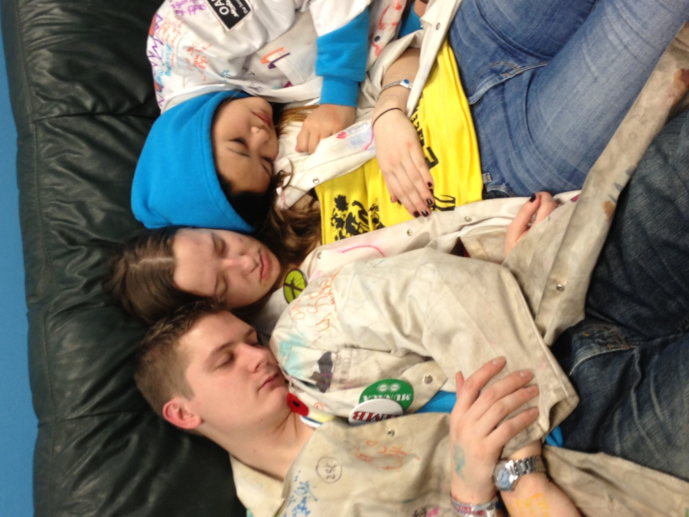
Hey Jess!
Wherever this note finds you, I hope youre having an amazing day! Justin said to think of a story / memory - well I had an amazing time doing Disney Week with you! Even though Im pretty sure you werent on team Scooby - which Ill never forget - we couldnt have done it without you. You were also one of the first people who reached out when I first started to get involved - and I know that you have done the same for a ton of people that have gotten involved in the Engineering community - and thats something you should be super proud of, because it really made it feel like a welcoming and fun place to be. Hope you had a great summer, see you soon!
Kueper
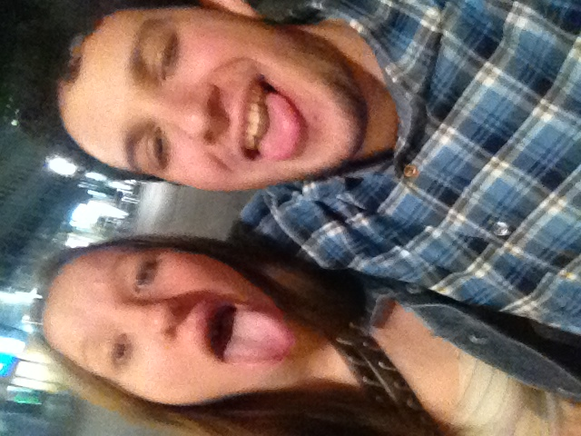
Dearest Jess,
Even on the day we first met (we sat next to each-other during the fake exam! #banditoweek), it was clear that you were someone who was full of life, love, and joy. Being able to share the academic experience with you over the years that followed has been an immense privilege. Whether we were downing beers at Blues Pub, devouring ice cream at Frostbite, panhandling outside the Roddick Gates, or shredding the floor at RnD, you’re always able to make things go from good to great.
I really want you to know how much people appreciate you tongue emoticon
Je t’aime,
Bryan Gingras
Dear Jess,
As I sit here and put together a few heartfelt words to express how kind and wonderful you have been to me, I find myself revisiting some pretty awesome sauce memories, some warm hugs and many blurry moments of being lost under the influence of that weird purple drink. And as I think back to the little things you have done for me, like lending me your mittens during the cold days of Roddick panhandling and to the big things you have done for me, like making me feel so comfortable and welcome during the PPO initiation #bestchiefever, I find a wide grin grow across my face. And this is what I will always remember you for, for the countless hours you spend to bring a smile on another's face. I respect you for your selflessness, for your craziness, for your calm in times of #PPOchaos and your ability to maintain that steadfast smile through it all. And so Honey/sweetie/sweetheart/love, for your birthday, I wish you as much joy as you have given (and just for clarification, that happens to be a shit-ton of joy).
Love,
Labattery
Getting to know more and more people at McGill, I heard your nickname is "Smoocher", but no one told me the reason for it. One day, walking by Frostbite, I asked you why was that. Without saying anything, you came around the counter and gave me the loudest kiss on the cheek. Since then, I understood why we call you Smoocher.
Martin Arlov
Happy birthday, Jess!!! Big hugs from all three of us! Hope your birthday's as wonderful as you are. :)
All the best,
Charlotte, Allan, and Abby
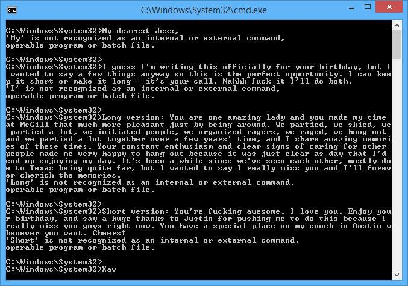
Xav
Hi there my little Jess,
I miss our lovely chats and seeing your smiling face every day at Frostbite. You are literally a ray of sunshine, and everything about you makes people want to shower you with love and affection. Thanks for being so radiant and beautiful and friendly and caring. I know we haven’t chatted in a while, but sending lots of good vibes your way and hope you are doing well in every respect!
Mishk
Ok so I met jess in second year. I honestly Thought after first year you pretty much stop making friends because everyone is in their rez groups. But jess was my first real new friend and I was so excited to have that assumption of mine disproved. One night jess was having a party and I was so excited to go, I said to my roommates, who were lame home bodies, as I left "I'm going to a party at my new engineering friend's place!!"
Clare K
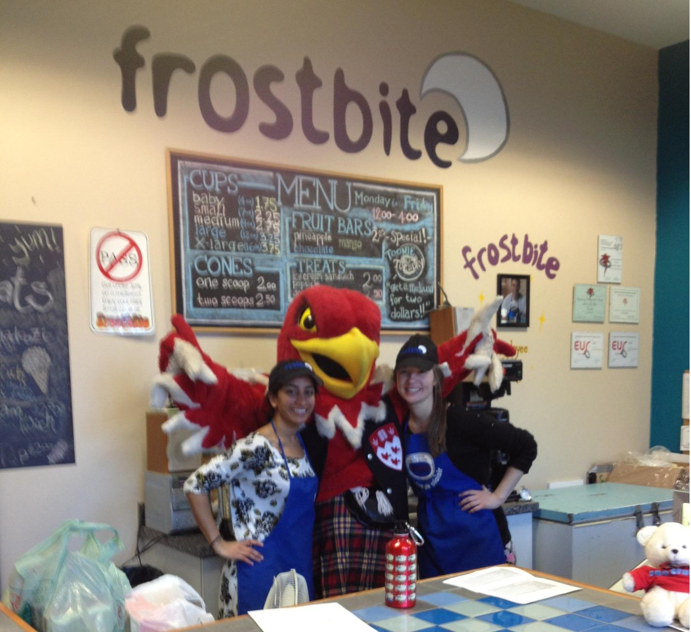
Keep smiling on
Jess, you have always been such a bright light in my EUS adventures. From the persistent joy you contagiously spread with your smile, to the sheer determination you show in all you do, I so very much adore you. All the shenanigans and moments of life aside, the most memorable moments surprisingly come down to Frostbite (and I don't say that because that's most recent for me).
Memory One: I remember you profusely apologizing about being a bit late for a shift, and unlike so many apologies I hear, yours is just so genuine. Memory Two: I remember scraping ice out of the freezers with you. I just couldn't sit back and watch you do it on your own, and in the end, it was actually quite calming just to be there working away monotonously by your side.
You're such a good, generous, inspiring person, and I hope you know that everyone you meet is lucky to have ever met you, myself included. I'm sure you'll do great things in life: just don't forget to stick to what you truly enjoy, because those are what will make you the happiest, and I don't want anything other than that for you. I'm sure our paths will cross again someday.
xoxo,
Zach Oman
The dirtiest limericks I could think of about Smoocher:
Jess at Frostbite:
When you fail a quiz don’t stress
At Frostbite works a woman named Jess
If you get under 30,
She’ll talk to you dirty,
And if got under 10 she’ll undress!
Smoocher of the PPO:
The PPO’s loveliest chief
Is best imagined with just a fig leaf
She’s like a wet dream
She’ll make your cone cream
You wish she would massage your beef!
Liquid Giggles
Dearest Jess,
I am so glad that I was able to join the Frostbite family two years ago because I was able to become friends with you and a lot of great people. When I describe you, I tell people that you are one of the nicest and sweetest people that I know. That’s not an exaggeration. You are always so friendly and caring to everyone around you and it’s contagious! Thank you for being such a wonderful role model in my life. I hope you have a very very happy birthday! You surely deserve it.
Love,
Sam Pho
Happy birthday Jess!
Neil Dentoom
Happy birthday Jess!
Neil Dentoom's Roomie
Jess,
I’m pretty sure that I wouldn’t be alive to write this if you hadn’t been there for me during the Time of my Life. I’ve only ever known you to be kind and awesome towards people and, even when you were expected to be a CRUEL INITIATOR, you were always looking out for us. Thank you so much for being an awesome friend and all-around sweetest person ever, all while being rowdy as f*ck. You definitely get the “person I would definitely not decline to party with the night before an important event that I shouldn’t be hungover for” award. I’m going to miss seeing your face at Frostbite, like, every day… Have a great birthday, PLEASE DON’T FORGET YOUR AWESOME FRIENDS HERE heart emoticon, You’ve got a lot of us J
Here’s to future drunken adventures and fun times,
Love,
The Codefather
First Impression
The first time I met Jess was in second year, I think? We were briefly introduced and I don’t think we talked for more than thirty seconds. A few weeks later I ran into her on the street. She started waving at me and had this huge smile on her face. I only vaguely remembered meeting her and couldn't even think of her name at the time. The only thing I do remember is thinking: “Wow, she is such a nice person! I can’t believe she remembers me and went out of her way to say hi to me.” A few years later, now that I actually know her and am lucky enough to call her a friend, I know that I was right, she is the kindest person I know.
Avril
Dear Beautiful Jessica,
If anyone asked me who the most generous and selfless person I know I would say “Why, it’s Jessica of course!”. You have touched the lives of so many young engineering folks in ways you don’t even know. You’re smile is contagious and your voice inspiring. Remember that time I stood on the table and screamed “Ripples = turd” ? That was my favourite initiation moment and one of many great memories with you. Good luck in life, keep doing what you’re doing cause you’re doing it well! Finally, HAPPY BIRTHDAY!
Catherine <3 (it's not a heart, it's a side ways ice cream cone)
The first time I met Jessica, I was hungover and delirious trying to find the entrance to OAP. Ever since we've bonded over the drunken tales and mishaps we've both experienced through our time at McGill. Jess is not only a mentor, friend, and a leader; but she means so much more to so many people. Through her kind nature and positive outlook, she has an innate ability to put a smile on anyone's face whether they're angry, sad, or happy already. From Frostbite, to Iron Ring Ceremonies, to the Movember fundraising at McGill Varsity games, and everything you've done with the Orchestra; I'll see you to the end Smoocher.<3
The only photo we actually have together is this one with a bunch of others that also mean a lot to you; it serves as a good memory of the fun times you had, and that there are to come. Here's to the future.
Alexander Dow aka. DOWZER
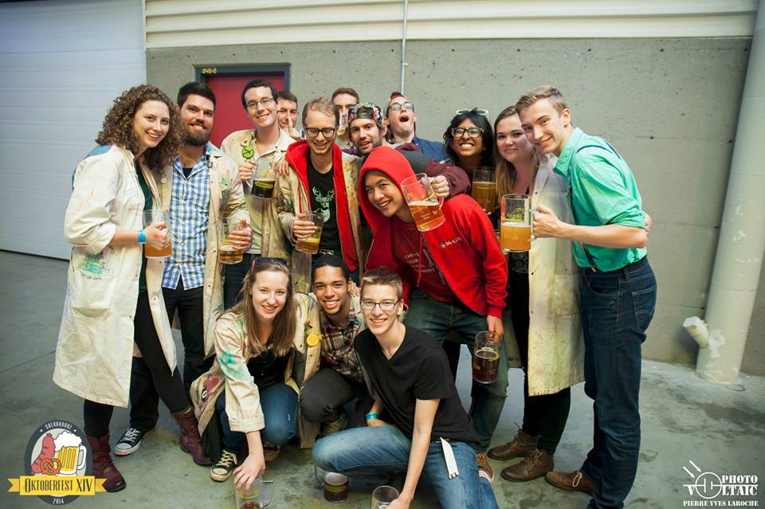
Yo homegirl,
what's good? Ima make this long and sentimental, cuz i know you about that life. so first and foremost, lemme tell a story. It was April 20th 2013, after a longgggg night of studying. I woke up at 10:25 am. I had an uneasy feeling when I woke up, like I was forgetting something, all the exam stress must have gotten to me. OH SHIT. Frostbite interview is at 10:30am. At this point I think to myself, if I go now, I'm going to be late, and I probably won't get it, so should I even get out of bed? Some spontaneous, impulsive force pulled me outta bed (not making this up), I quickly put on a sweater, and longboarded as fast as I could to McConnell in my Pjs. When I got to McConnell I was like NO, I don't know where the Committee room is. After wandering around, I finally stumbled into the Frostbite Interview, obnoxiously out of breathe. Probably around 5-8 minutes late I'd say? I walk out. In my head i was like, NO WAY, i got that job, I showed up late and in horrible interview attire. I believe it was a day later, I got the email saying that I was going to be working at Frostbite. and HOMEGIRL, lemme tell you, you boy was EXCITEDDDD. That's when my engineering career at McGIll changed. That story has absolutely nothing to do with your birthday, but it was that magical force that pulled me out of bed that morning, that allowed me to meet you. And , I'm so glad I did.
When I think of our memories together, I think of me walking into Frostbite really depressed, tired, or sad about school or such, and you saying "What's wrong handsome?" (by the way, I love when you call me handsome :') makes me feel gucci ), you would always console me and make me feel better. One time that i would like to mention specifically was the night that I walking home, super super stressed about DPM, super sad. I saw you and justin at the corner of Hutchison and Prince Arthur, and we just sat there and you talked to me, gave me advice, listened to my problems, AND gave me some niceeeee hugs. And yo, a brotha APPRECIATES that for real. I needed you in that moment, and you came through. So yea, as cheesy as this sounds, you're probably unaware of the strong impact you've had on me for the past 2 years, and it is very significant. Anyways, I just want to conclude by saying, thank you for always being real, being the nicest, and being a homegirl. I'm gonna feel so empty when you graduate, especially when I'm sad at Frostbite. You were the best manager I've ever had ahah. So Happy birthday, have a dope one, stay true, and stay gucci. Best of luck in your final year at McGill ! Your boy RichieWu OUT. #saugaStandUp
Richard Wu
Ashkaan M
No stress Jessica.
By that I mean forget all the little things that could possibly be bothering you and think of all the awesome things that you have, such as amazing family and friends. Now I know no stress sounds stupid and impossible to some, but take it as let this go. Don't let the little things get to you and be awesome.
Love you long time,
Olivier
Happy birthday Smoocher!
First, I wish you a great day and also a great last year at McGill.Second, I want to thank you for all you've done for the PPO and for your involvements at McGill,such as the Plumber's Ball. I really wish I had known you earlier. Nonetheless, all the parties, volleyball and charity events were amazing and I'm glad to have lived them with you. You are a remarkable person and I hope I will see you again (PPO reunion in 10 years?).
Happy birthday again, and never forget that aggression and strength is the way to go!
Purple DiceStruction
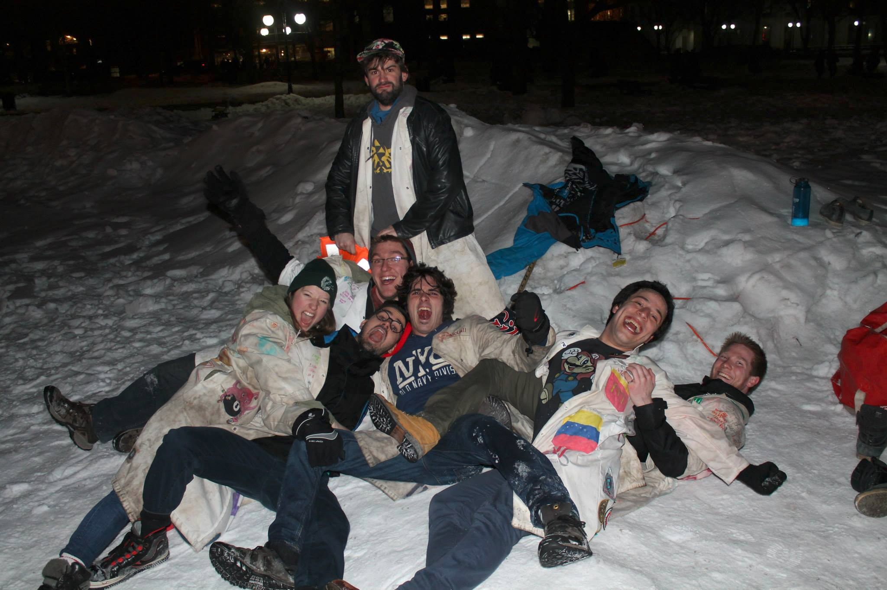
Dear Ms. Jessica Ferkul,
The first time I ever had the pleasure of working with you was when I became G-Store manager in January 2013. It was back before I knew anybody in the EUS, and I was extremely nervous about making a good first impression to everyone, particularly those I would be working with closely like Dianne and JR (the then-VP Services). Of course, this included yourself and Justin, the two Frostbite managers at the time. One of the first things I was taught as manager was that it was important to keep good relations with Frostbite, since they were lending us invaluable counter space to make our coffee. When I introduced myself to you, your bubbly and amiable demeanour made me feel immediately welcomed into the Services family – I liked you right away.
After the past few years working with you not only within the Services but also through many PPO events, that sentiment is unchanged. Over and over you’ve impressed me with your amazing leadership abilities, and your endless optimism and kindness. Any person in or out of the EUS community can always find a friendly smile and a listening ear with Jessica Ferkul.
I am extremely glad to have met you, and while we both won’t be at McGill for much longer (fingers crossed), I cannot wait to keep making new memories with you, whether they be during PPO events like Golden Valentine’s, drinking tequila shots, or drunkenly crying together after another graduation ball (that was a bit too messy, maybe let’s not do that again). And what’s not to say that we won’t keep making those memories long after graduation!
If ever you should want to talk to somebody, I am always there to listen to you as you always were for me. You’re a fantastic friend, and I wish you all the best.
Continue being absolutely lovely!
Jasmin de Campos
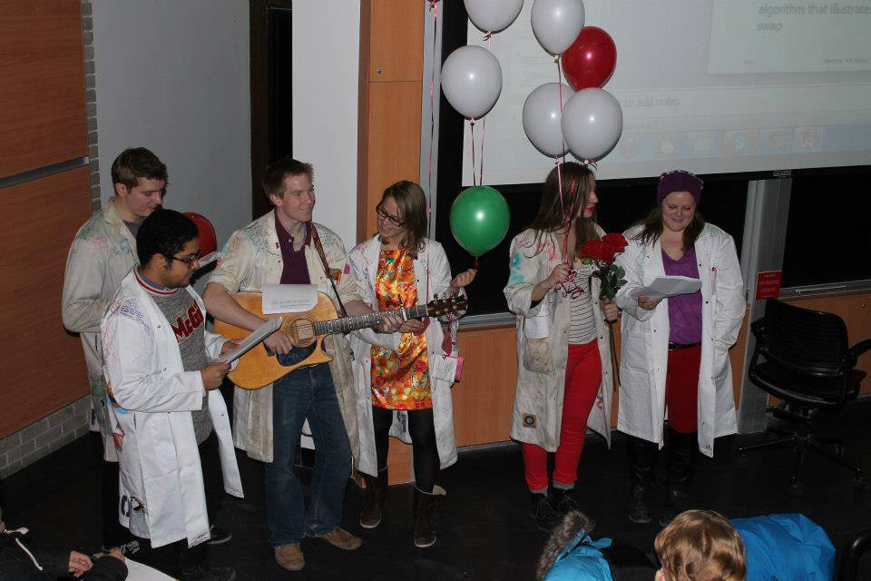
Jess,
My first memorable moments with you date way back my U3 year at McGill (nearly prehistoric times now, I know). Engineering Excursions were just getting into the swing of things and we were looking for some fresh new talent. I remember you'd been an eager participant in a bunch of our initial events (sometimes bordering on overeager - though my memory is hazy, I think I recall you trying to steal a golf cart on one particular rainy camping trip...) By second semester you were solidly on board our team, and how glad I was! In comparison to most of the committee you were actually pretty darn responsible.
That's not to say you didn't have a sloppy fun side though, and Messy Jessy made many memorable appearances throughout the year. It was particularly fun seeing you through initiation, and I'll be damned if Jack to the Smoocher isn't one of the finest plumbers to ever join the ranks of the PPO. In your time as chief, I always respected you and admired the hard work and dedication you put forward. No matter how swamped you were you'd always all of us feel appreciated, and it was always a pleasure working with you because I felt like you were so genuinely grateful for everyone's help. I also had an absolute blast working with you on DisnE-Week, like boat-racing to decide our theme and filming all those ridiculous musical scenes, and so on and so forth…
But more than a great volunteer and a great chief, you were (and still are!) a great friend. You’re always ready to offer up a bright smile and a kind word or a sympathetic ear. Seeing you at Frostbite was always a treat in itself and always made my day a little brighter. Oh, and of course, I'll always appreciate how you never fail to laugh at all my really dumb jokes and puns.
Your fellow PPO member, volunteer, engineer, and friend,
James
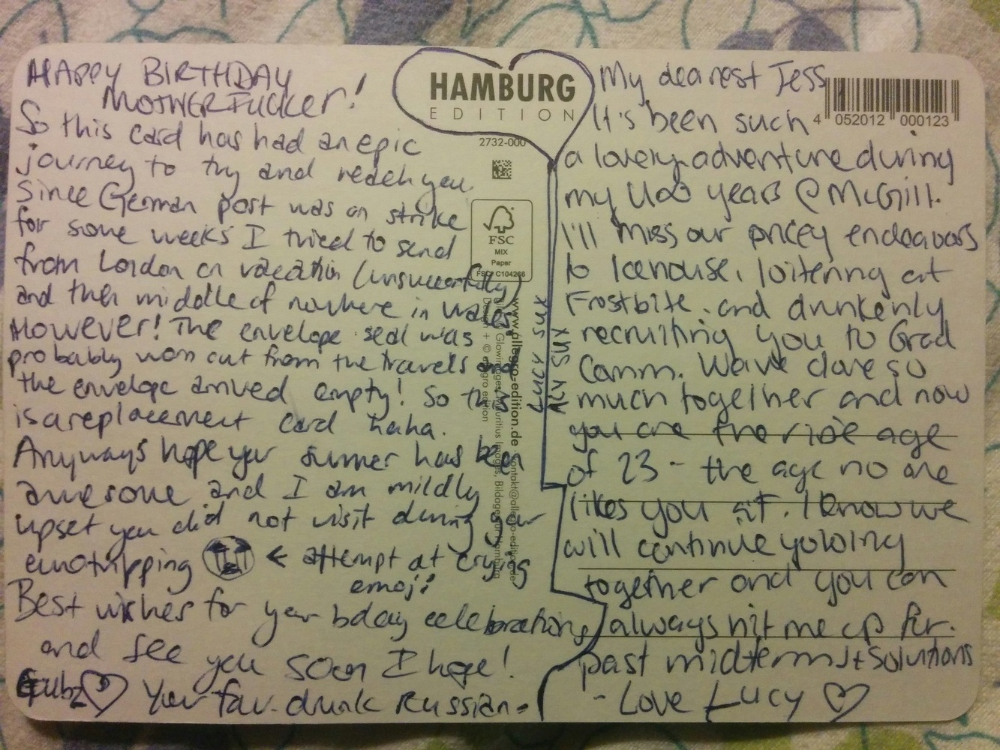
Lucy and Aly
Hey Girl,
I have to thank you for all the great times we spent together! Although I only really got to know you in my 3rd year of university, some of my best moments at McGill were spent with you. From gossiping in the EUS mall about whatever drama was going on that day, to having a blast at Blues Pub or running a pub crawl stop, and even just being able to come together as part of the few ECSE ladies, I always knew that whatever time was spent with you would always be a blast!
Thank you for being there whenever I was having a bad day and needing to talk to someone, and thank you for trusting me with your secrets when things weren’t going the way you wanted them to. Ever since I met you, you always made me feel welcome and made me feel like I was a part of whatever was going on; I’ve always admired that quality in you. No matter what kind of day you were having, whether it was the best day of your life or the worst, you always made time to listen to be there for the people you care about.
As I look through the pictures of us together, I’m reminiscing the great times, the blurry times, and the times I can’t even remember we took the picture, and I just wish that I could go back and relive those moments again. I am so lucky to have met you, and I hope that, even with the distance, we are able to keep in touch! You won’t be able to get rid of me too easily, cause I’m sure that I’ll be back to visit McGill a few times in this coming year.
The most important part of all this, though, is that you’re ALMOST DONE. You only have 8 months left at McGill (and I know for a fact that you WILL be done in 8 months) and then you will be out of there!! You are in the final stretch, and it really will be all over so quickly! Make the most of your last months as a University student, and always continue believing in yourself! But, if ever that belief starts to disappear, you can always message me and I’ll be there to boost your mood and help bring back the confidence I know you have!
Happy Birthday Girl <3
I absolutely can’t wait to see you so we can celebrate!
Love always,
Alison
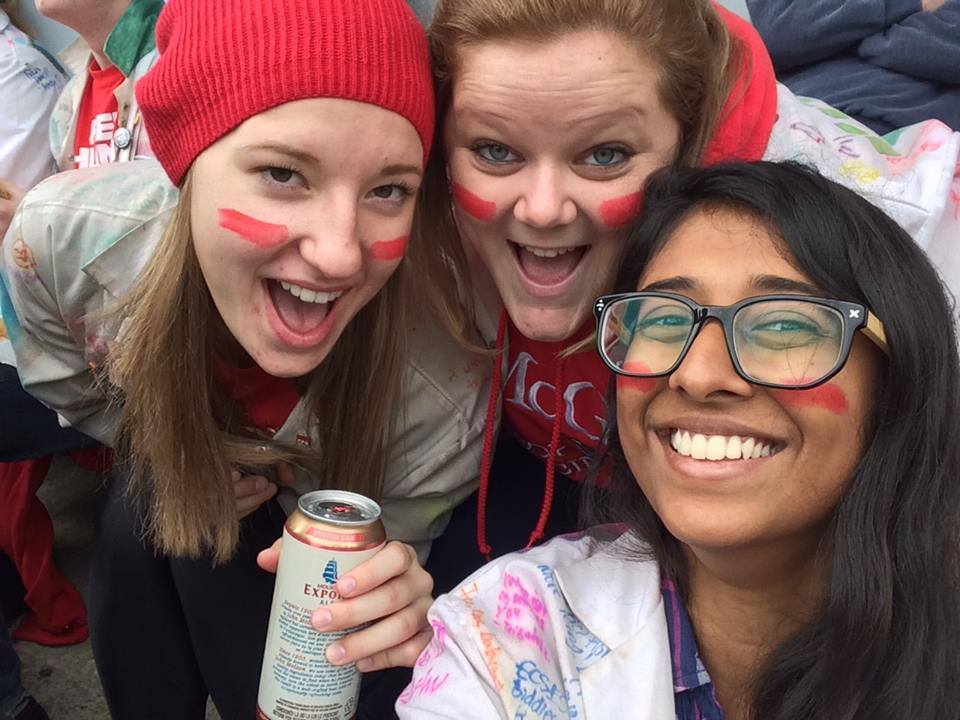
Julian S
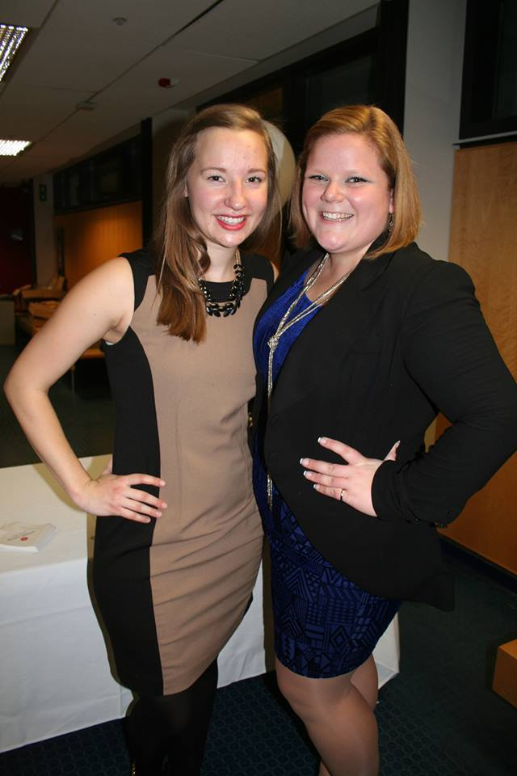
Hey Jess,
Remember that rainy loonie line week? You know which one... Thank you for being so inclusive and welcoming me even when I wasn't PPO. You're one of the main reasons I actually joined in the end. What a wonderful chief, what a radiant person.
Love,
Selin
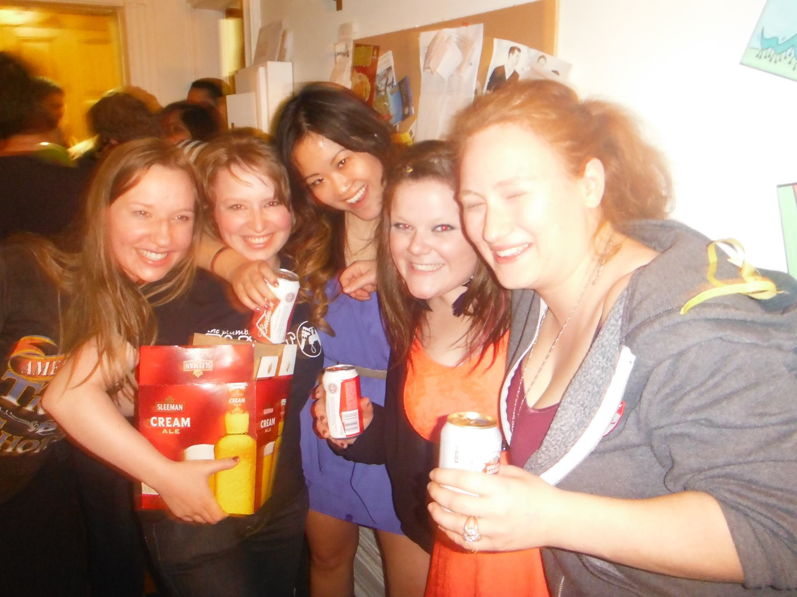
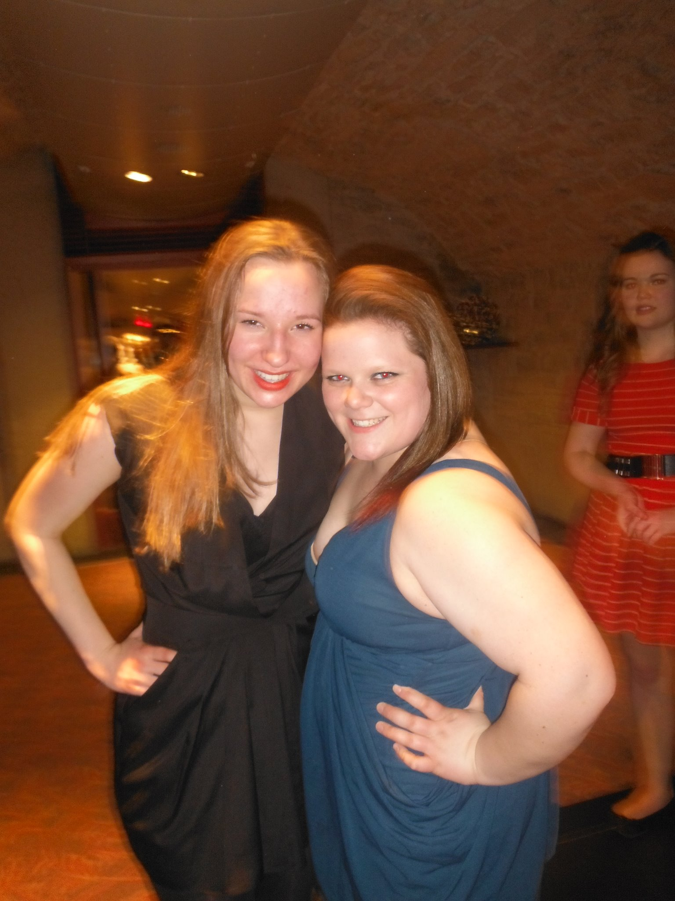
Jess,
You always call me sweetie when you say hello. Whether it’s Monday or Friday, exam time or OAP time, rain or shine – you brighten my day.
You care more about others than about yourself. Whether you’ve had a good day or bad, whether you’ve won or you’ve lost – you put others first.
You do what you must because you understand. Whether you’re fueled or exhausted, frustrated or determined – you show up, day after day, and take on the responsibilities others refuse.
Jess – since I’ve met you, you’ve done nothing but inspire and motivate me to be the best person I can be. Your kindness, passion, and resilience encourage me to be the kind of person you are – selfless, endlessly compassionate, and true. You’ve made a real difference in my life, and I can’t be happier to call you my friend.
With all my heart,
Alex Gershanov
Hey Jess!
Wherever this note finds you, I hope youre having an amazing day! Justin said to think of a story / memory - well I had an amazing time doing Disney Week with you! Even though Im pretty sure you werent on team Scooby - which Ill never forget - we couldnt have done it without you. You were also one of the first people who reached out when I first started to get involved - and I know that you have done the same for a ton of people that have gotten involved in the Engineering community - and thats something you should be super proud of, because it really made it feel like a welcoming and fun place to be. Hope you had a great summer, see you soon!
Kueper
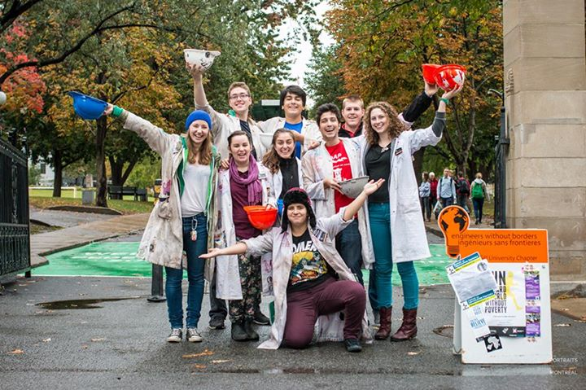
David G
I don't know how I'll survive without your smile and "Sweeties" when I would get ice cream at Frostbite. I guess I'll have to come back.
I wish you the best birthday! Have fun!
Marco G